Dataset Proposal & Track
Exploratory Data Analysis
The dataset contains COVID-19-related tweets labeled with one of five sentiment classes.
The analysis below summarizes class balance, tweet length, and the temporal structure of
the supplied training and test splits, and closes with representative example tweets. The model input is OriginalTweet; the
target is Sentiment.
Training samples
41,157
Test samples
3,798
Sentiment classes
5
Missing tweet texts / labels
0 / 0
1. Sentiment Class Distribution
Positive is the largest training class (11,422; 27.75%), while Extremely Negative is the smallest (5,481; 13.32%). The dataset is moderately imbalanced, but no single class dominates. Accuracy should therefore be reported alongside macro-F1, which weights all five classes equally.

2. Tweet Length and Text Characteristics
Tweets contain informal social-media text, including URLs, hashtags, mentions, and punctuation. Mean tweet length is 204.20 characters and 30.50 whitespace-separated words in the training set, compared with 213.44 characters and 32.91 words in the test set. The observed maximum is 64 words in training and 62 words in testing.

| Statistic | Training set | Test set |
|---|---|---|
| Mean characters per tweet | 204.20 | 213.44 |
| Median characters per tweet | 215 | 227 |
| Mean words per tweet | 30.50 | 32.91 |
| Median words per tweet | 32 | 34 |
| Mean URLs per tweet | 0.58 | 0.48 |
| Mean hashtags per tweet | 1.97 | 2.06 |
| Mean mentions per tweet | 0.43 | 0.32 |
Preprocessing will preserve sentiment-bearing signals such as negation, punctuation, and hashtags. Token sequences will be truncated and padded consistently, with padding excluded from meaningful model computation through attention masks or sequence-length handling.
3. Temporal Distribution Shift
The supplied test set primarily predates the training set: test dates span 2–16 March 2020, whereas training dates span 16 March–14 April 2020. Tweet volume also varies substantially by date. Because COVID-19 discussion and public sentiment can change over time, test performance may reflect temporal distribution differences as well as model quality.


4. Duplicate and Missing-Value Checks
Tweet texts and sentiment labels have no missing values. The preliminary normalized-text check found 15 repeated texts within the training set, no repeated normalized texts within the test set, and one normalized text shared across the two splits (approximately 0.03% of unique test texts). No conflicting sentiment labels were found for normalized duplicates. This overlap should be documented when reporting final evaluation results.
Examples of the texts that are duplicated within the training set are listed below, each with its sentiment label (identical across all copies).
| # | OriginalTweet | Sentiment |
|---|---|---|
| 1 | Scammers often prey on people in the most difficult situations If you re contacted by someone offering to recover your money for an event or a holiday look out for the signs of a potential | Neutral |
| 2 | 19 for this too shall pass | Neutral |
| 3 | Our life really changed about the middle of last week to be really honest with you said South Michigan Food Bank CEO Peter Vogel The demand on food from us has been really dramatic | Positive |
| 4 | 19 Get protected face masks on stock regular prices | Positive |
| 5 | With oil prices falling amid the COVID 19 recession it s the beginning of the end for fracking | Negative |
| 6 | Part 2 No Toilet Paper Don t do this | Negative |
| 7 | To get through this together we must all stay apart means you can still go to the grocery store as long as you re not in mandatory isolation or quarantine but limit it to once per week Otherwise | Positive |
| 8 | With milk prices plunging to lows dairy farmers are dumping the product to curb an oversupply during the lockdown More | Negative |
| 9 | All hands on deck Grocery store executives get a taste of the hard life on coronavirus front lines | Negative |
| 10 | With the COVID 19 pandemic ongoing many people are nervous about going to the grocery store An old tradition is seeing an uptick in business the milkman | Negative |
| 11 | Food supply chains are strong in the COVID 19 pandemic To keep them that way strong public private cooperation smart policy responses and prudent consumer behavior are essential | Extremely Positive |
| 12 | Remember if anyone in your household shows symptoms that may be Coronavirus then you MUST all stay at home That means no one goes to the supermarket or for walks outside Everyone stays in and follows these rules | Negative |
5. Representative Samples
Figure 5 shows 15 training tweets drawn at random (fixed seed), each titled with its sentiment label. They illustrate the kind of input the models will encounter: informal, noisy social-media text, mostly about supermarkets, panic buying, masks, online shopping, and public life in early 2020. Length varies from a single sentence to tweets long enough to be shortened in the figure, matching the word-count spread in Section 2. Fifteen tweets are too few to estimate class proportions, so those should be read from Section 1 rather than from this sample.

| Sample type | What it looks like | Examples in Figure 5 |
|---|---|---|
| Markup and noise | Hashtags, @mentions, shortened links, and HTML-escaped ampersands appear inline with the text. | # covid2019 # stayhomechallenge, @ keithbaldrey, https : / / t. co / kt8ltfpikn, amp ; |
| Informal writing | Missing apostrophes, casual phrasing, and rhetorical questions. | "ive never seen my pharmacy and grocery store so crowded", "doesnt want her identity", "who will benefit from this wave?" |
| Personal experience and opinion | First-person anecdotes, warnings, and complaints about panic buying, mask shortages, and personal risk. | Sweets-and-toilet-paper anecdote (Extremely Positive), masks in Finland (Extremely Negative), high-risk shopper (Extremely Negative) |
| News and informational posts | Neutral reporting with no personal voice, labeled with a range of classes. | Assessment centre opening (Neutral), primary elections pushed back (Neutral), cash use falling (Negative), donation to a city (Positive) |
| Promotional and business content | Marketing and consulting text aimed at brands and retailers, with little emotional language. | "find out how you can optimise talent generated content", "its imperative that marketers are sensitive", Acosta research initiative (all Positive) |
Baseline, Pretrained Backbone & Fine-Tuning Protocol
The study compares three models on five-class tweet sentiment classification: a BiLSTM trained from scratch (EXP-1), DistilBERT with a frozen backbone where only the classification head is trained (EXP-2), and DistilBERT with full fine-tuning (EXP-3). All three share the same tokenizer, data splits, random seed, and checkpoint-selection rule, so differences in results come from the model and the training scope rather than from the data pipeline.
Unified Experiment Activity Diagram
Tokenize → split → train → validate → restore the best checkpoint → test once.
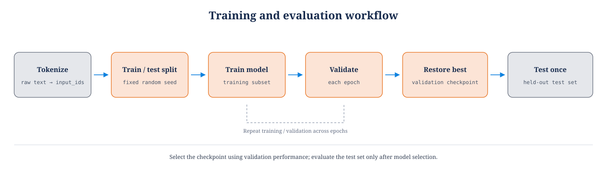
- Input / target:
OriginalTweet→Sentiment(5 classes) - Tokenizer:
distilbert/distilbert-base-uncased(lowercased WordPiece), shared by all three models - Sequence length: truncated to 128 tokens; padded dynamically to the longest tweet in each batch
- Padding handling: attention mask for DistilBERT; true sequence lengths derived from the mask for the BiLSTM
- Validation: stratified 10% subset held out from the training file (37,041 train / 4,116 validation, seed 42), used only for early stopping and checkpoint selection
- Test: supplied test file, evaluated once with the selected checkpoint
- Text handling: no cleaning; raw tweets are tokenized as-is, so negation, punctuation, hashtags, mentions, and links are preserved
- Augmentation: none
- Optimizer: AdamW (weight decay 0.01)
- Loss:
CrossEntropyLoss(no class weights) - Gradient clipping: max norm 1.0
- Early-stopping patience: 3 epochs
- Checkpoint criterion: highest validation macro-F1
- Random seed: 42 (Python, NumPy, PyTorch)
- Mixed precision: not used
- Device: first available of CUDA, MPS, CPU
- Hardware: NVIDIA GeForce RTX 4060 Laptop GPU (8 GB)
Experiment Configurations
Hyperparameters that differ between the three experiments; everything else follows the shared configuration above.
| Experiment | Model | Trainable parameters | Learning rate | LR schedule | Batch size (train / eval) | Max epochs | Checkpoint |
|---|---|---|---|---|---|---|---|
| EXP-1 | BiLSTM, trained from scratch | 4,567,557 (100%) | 1e-3 | Constant | 64 / 128 | 15 | checkpoints/bilstm_best.pt |
| EXP-2 | DistilBERT, frozen backbone | 594,437 of 66,957,317 (0.89%) | 2e-5 | 10% linear warm-up, then linear decay | 16 / 32 | 5 | checkpoints/distilbert_freezebb_best/ |
| EXP-3 | DistilBERT, full fine-tuning | 66,957,317 (100%) | 2e-5 | 10% linear warm-up, then linear decay | 16 / 32 | 5 | checkpoints/distilbert_best/ |
Architecture Definitions
A from-scratch recurrent baseline and one pretrained Transformer used in two fine-tuning modes.
| Experiment | Input representation | Implemented configuration | Loss function | Parameters |
|---|---|---|---|---|
| EXP-1 BiLSTM | Token ids [B, L] plus sequence lengths |
Embedding over the 30,522-token DistilBERT vocabulary (128 dimensions, random initialization, padding id 0 excluded from updates); two stacked bidirectional LSTM layers with hidden size 128 and dropout 0.3 between layers; the final forward and backward hidden states of the top layer are concatenated (256 values) → Dropout(0.3) → Linear(256, 5). |
CrossEntropyLoss |
4,567,557 total; all trainable |
| EXP-2 DistilBERT (frozen backbone) | Token ids and attention mask, both [B, L] |
Pretrained distilbert-base-uncased (6 Transformer layers, 12 attention heads, hidden size 768). The first-token state feeds a head of Linear(768, 768) → ReLU → Dropout(0.3) → Linear(768, 5). Embeddings and all encoder layers are frozen; only the head is trained. |
CrossEntropyLoss |
66,957,317 total; 594,437 trainable |
| EXP-3 DistilBERT (full fine-tuning) | Token ids and attention mask, both [B, L] |
Same architecture and classification head as EXP-2, with every parameter (embeddings, encoder layers, and head) updated during training. | CrossEntropyLoss |
66,957,317 total; all trainable |
Implemented Architecture Diagrams
Layer diagrams show each model’s tensor shapes and which parts are trainable.
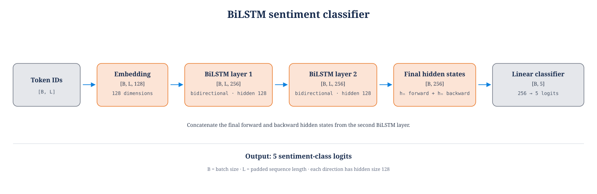
- Learns 128-dimensional embeddings for the shared WordPiece vocabulary from random initialization.
- Reads each tweet in both directions through two stacked LSTM layers, using true lengths to skip padding.
- Concatenates the final forward and backward hidden states (256 values), applies dropout, and classifies into 5 sentiments.
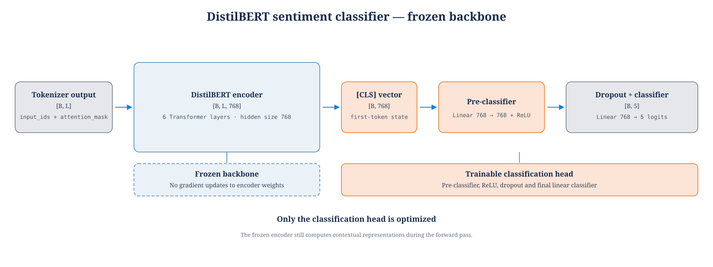
- Embeddings and six encoder layers (66,362,880 parameters) stay fixed.
- Only the pre-classifier and classifier layers learn the sentiment mapping.
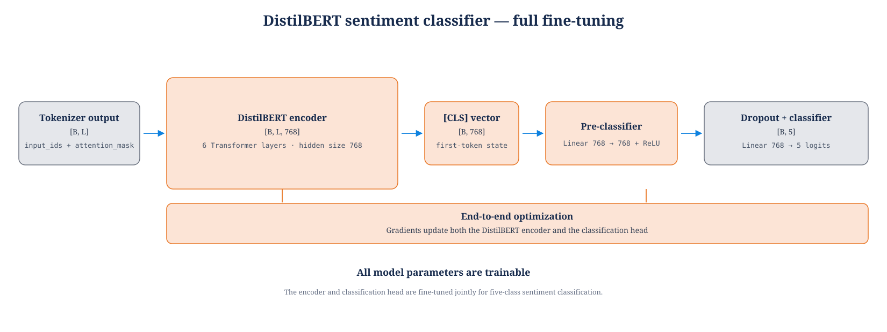
- Same architecture as EXP-2, with every layer updated.
- A small learning rate with warm-up adapts the pretrained weights without overwriting them.
Fine-Tuning Protocol
Frozen backbone (EXP-2)
- Gradients are disabled for the embeddings and all six encoder layers.
- The backbone runs in evaluation mode during training, so its dropout does not perturb the frozen features; the head stays in training mode.
- The optimizer and gradient clipping only see the 594,437 trainable head parameters.
Full fine-tuning (EXP-3)
- All 66,957,317 parameters are updated with AdamW.
- The learning rate warms up linearly over the first 10% of steps, then decays linearly to zero.
- Warm-up and the small learning rate (2e-5) limit early updates that could damage pretrained representations.
- The classification head dropout is 0.3; the encoder keeps DistilBERT’s default dropout.
EXP-2 and EXP-3 use the same learning rate, schedule, batch size, epoch budget, seed, and selection rule, so the set of trainable parameters is the only factor that changes. EXP-1 differs from both in architecture, pretraining, and hyperparameters, because a randomly initialized recurrent model needs a larger learning rate and more epochs.
Evaluation Protocol
Train, validate each epoch, restore the best validation macro-F1 checkpoint, then test once.
| Category | What is measured |
|---|---|
| Classification quality | Accuracy, macro precision, macro recall, macro F1, and a per-class report on the supplied test split |
| Error structure | Confusion matrix per model, plus qualitative examples where the models agree or disagree |
| Learning behavior | Per-epoch training and validation loss and accuracy curves |
| Representation analysis | PCA, t-SNE, and UMAP projections and a class-prototype cosine similarity matrix of the representation that feeds the final linear layer |
| Compute cost | Training time, inference time per sample, FLOPs per sample, parameter count, and model size |
The supplied test split predates the training split and shares one normalized text with it (EDA Sections 3 and 4). Test scores may therefore reflect temporal distribution shift as well as model quality, and the validation subset, not the test set, is used for every training decision.
Reproducing the Experiments
| Purpose | Command |
|---|---|
| Train and evaluate EXP-1 (BiLSTM) | python main.py --base |
| Train and evaluate EXP-2 (frozen backbone) | python main.py --pretrained --freeze |
| Train and evaluate EXP-3 (full fine-tuning) | python main.py --pretrained |
| Evaluate a saved model without training | python main.py --base --eval, python main.py --pretrained --freeze --eval, or python main.py --pretrained --eval |
| Qualitative comparison from saved checkpoints | python main.py --infer |
Controlled Factor Experiments & Metrics
- Same tokenizer, data splits, seed, and checkpoint-selection rule for every experiment.
- Seed
42· 37,041 train / 4,116 validation / 3,798 test · 5 sentiment classes.
- EXP-1, EXP-2, and EXP-3 were each trained once and evaluated once on the supplied test split with the checkpoint that had the highest validation macro-F1.
- All figures below come from the final console output and the plots written by
main.pyfor those runs.
| Experiment ID | Changed Factor | Primary Metric (Test Accuracy) | Secondary Metric (Macro-F1) | Compute Cost |
|---|---|---|---|---|
| EXP-1 | Baseline (scratch training) · BiLSTM | 73.17% | 0.7421 | 247.36 s training · 4.57 M parameters |
| EXP-2 | Pretrained Backbone (Frozen) · DistilBERT | 38.94% | 0.3779 | 331.45 s training · 66.96 M parameters (0.59 M trainable) |
| EXP-3 | Pretrained Backbone (Full Fine-Tune) · DistilBERT | 85.33% | 0.8577 | 1,019.09 s training · 66.96 M parameters (all trainable) |
- Full fine-tuning (EXP-3) is the best model: 85.33% test accuracy and 0.8577 macro-F1, which is 12.16 accuracy points and 0.1156 macro-F1 above the BiLSTM baseline. Its test loss is 0.4941, against 0.8570 for the baseline.
- The frozen backbone (EXP-2) reaches only 38.94% accuracy and 0.3779 macro-F1. That is 34.23 accuracy points below the from-scratch BiLSTM and 46.39 points below full fine-tuning.
- EXP-2’s best validation macro-F1 (0.3893) came at its final epoch (5 of 5), so training had not plateaued when the epoch budget ended. Its score reflects the shared 2e-5 learning rate and five-epoch budget as much as the limits of frozen features; a larger learning rate or more epochs for the head would likely raise it, which this controlled setup does not test.
- Validation macro-F1 is higher than test macro-F1 for every model: by 2.4 points for EXP-1, 2.2 for EXP-3, and 1.1 for EXP-2. This is consistent with selecting checkpoints on validation data and with the temporal shift described in EDA Section 3, but these runs cannot separate the two effects.
- Early stopping: the BiLSTM’s best epoch was 7 and training stopped after epoch 10. Full fine-tuning peaked at epoch 4 of 5. The frozen run used all 5 epochs.
Detailed Test Metrics
Macro averages weight the five sentiment classes equally; the test split has 3,798 tweets.
| Experiment | Test Loss | Accuracy | Macro-Precision | Macro-Recall | Macro-F1 | Best Epoch (epochs run / max) | Best Validation Macro-F1 |
|---|---|---|---|---|---|---|---|
| EXP-1 BiLSTM | 0.8570 | 0.7317 | 0.7677 | 0.7275 | 0.7421 | 7 (10 / 15) | 0.7658 |
| EXP-2 DistilBERT (frozen backbone) | 1.3791 | 0.3894 | 0.4455 | 0.3700 | 0.3779 | 5 (5 / 5) | 0.3893 |
| EXP-3 DistilBERT (full fine-tuning) | 0.4941 | 0.8533 | 0.8606 | 0.8559 | 0.8577 | 4 (5 / 5) | 0.8794 |
Per-Class Performance
Precision (P), recall (R), and F1 for each sentiment class on the test split.
| Class | Support | EXP-1 BiLSTM | EXP-2 DistilBERT (frozen) | EXP-3 DistilBERT (full) | ||||||
|---|---|---|---|---|---|---|---|---|---|---|
| P | R | F1 | P | R | F1 | P | R | F1 | ||
| Extremely Negative | 592 | 0.7664 | 0.7483 | 0.7573 | 0.5337 | 0.1875 | 0.2775 | 0.8977 | 0.8598 | 0.8783 |
| Negative | 1,041 | 0.6743 | 0.7378 | 0.7046 | 0.3717 | 0.4063 | 0.3883 | 0.8363 | 0.8492 | 0.8427 |
| Neutral | 619 | 0.8837 | 0.7367 | 0.8035 | 0.4614 | 0.4540 | 0.4577 | 0.8276 | 0.8918 | 0.8585 |
| Positive | 947 | 0.6469 | 0.7603 | 0.6990 | 0.3251 | 0.5269 | 0.4021 | 0.8298 | 0.8342 | 0.8320 |
| Extremely Positive | 599 | 0.8673 | 0.6544 | 0.7460 | 0.5357 | 0.2755 | 0.3638 | 0.9117 | 0.8447 | 0.8769 |
| Macro average | 3,798 | 0.7677 | 0.7275 | 0.7421 | 0.4455 | 0.3700 | 0.3779 | 0.8606 | 0.8559 | 0.8577 |
| Weighted average | 3,798 | 0.7464 | 0.7317 | 0.7341 | 0.4258 | 0.3894 | 0.3819 | 0.8547 | 0.8533 | 0.8536 |
- Pretraining helps every class. Moving from the BiLSTM to full fine-tuning raises F1 by 0.055 on Neutral (the smallest gain) up to 0.138 on Negative (the largest).
- The weakest class differs by model: Positive for the BiLSTM (F1 0.6990) and for full fine-tuning (0.8320), and Extremely Negative for the frozen run (0.2775, with recall of only 0.1875).
- The same precision/recall pattern appears in all three models. Both extreme classes have precision above recall, so they are predicted conservatively, while Positive and Negative have recall above precision, so they are over-predicted.
- The confusion matrices show that errors mostly fall between neighboring classes: adjacent-class confusions make up 72.0% of the BiLSTM’s errors, 80.4% of full fine-tuning’s, and 59.4% of the frozen run’s. When an extreme tweet is misclassified, 95–97% of those errors go to the adjacent milder class for the BiLSTM and full fine-tuning (64–76% for the frozen run).
- This fits the labeling consideration in the EDA tab, where boundaries between adjacent classes such as Positive and Extremely Positive can be subjective.
- The frozen run is far from balanced: it predicts Positive for 1,535 of 3,798 tweets (40.4%) although only 947 (24.9%) are Positive, and it recalls only 18.8% of Extremely Negative and 27.6% of Extremely Positive tweets.
Resource Metrics
Training time covers training passes only (validation excluded); inference time is per sample after warm-up.
| Experiment | Total Train Time | Inference (ms/sample) | FLOPs (B/sample) | Parameters (M) | Trainable Parameters | Model Size |
|---|---|---|---|---|---|---|
| EXP-1 BiLSTM | 247.36 s | 0.058519 | 0.085681 | 4.567557 | 4,567,557 (100%) | 17.424 MB |
| EXP-2 DistilBERT (frozen backbone) | 331.45 s | 1.183257 | 8.332611 | 66.957317 | 594,437 (0.89%) | 255.422 MB |
| EXP-3 DistilBERT (full fine-tuning) | 1,019.09 s | 1.186319 | 8.332611 | 66.957317 | 66,957,317 (100%) | 255.422 MB |
Learning Curves
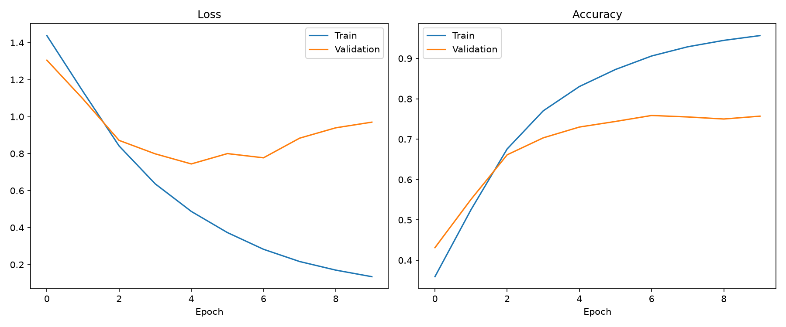
_learning_curves.png)
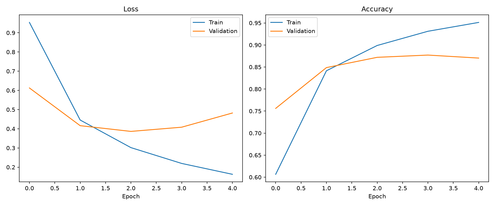
Training Remarks
EXP-1 BiLSTM
- Training loss falls from 1.4382 to 0.1345 and training accuracy rises from 35.9% to 95.7% over 10 epochs, while validation macro-F1 climbs from 0.4267 to its peak of 0.7658 at epoch 7. In epochs 1–2 training accuracy is below validation accuracy (35.9% vs 43.1%, then 52.6% vs 55.1%) because it is averaged while the model is still improving.
- Validation loss is lowest at epoch 5 (0.7443) and rises afterwards, with a small dip at epoch 7, reaching 0.9702 by epoch 10 while training loss keeps falling. The macro-F1-selected checkpoint (epoch 7, validation loss 0.7774) therefore sits slightly after the loss minimum.
- The gap between training and validation accuracy is 14.7 points at the selected epoch (90.6% vs 75.9%) and 20.0 points at epoch 10 (95.7% vs 75.7%). Validation accuracy stays between 75.0% and 75.9% from epoch 7 on. Most of the model’s parameters (3.9 of 4.57 M) are in the randomly initialized embedding table, which can memorize the 37,041 training tweets.
- Validation macro-F1 stayed below 0.7658 for epochs 8–10 (0.7632, 0.7573, 0.7628), so training stopped after epoch 10 and the epoch-7 checkpoint was restored.
EXP-2 DistilBERT (frozen backbone)
- The best validation macro-F1 (0.3893) came at epoch 5 of 5, so the run had not passed its peak when the five-epoch budget ended and early stopping never applied.
- After all five epochs the frozen run’s validation macro-F1 (0.3893) is still far below the 0.7654 that full fine-tuning reached after a single epoch.
- Only the 594,437 head parameters update, and they start from random initialization at the small learning rate (2e-5) chosen for fine-tuning a pretrained backbone, so the head probably moves too slowly to converge in five epochs. This is why EXP-2 should be read as a frozen backbone under the same budget as EXP-3, not as the best a frozen backbone can do.
- Test macro-F1 (0.3779) is 1.1 points below the best validation score, the smallest gap of the three models.
EXP-3 DistilBERT (full fine-tuning)
- After a single epoch validation macro-F1 is already 0.7654, nearly the BiLSTM’s best (0.7658), and validation accuracy reaches 84.9% at epoch 2. Pretrained representations transfer almost immediately once the backbone is allowed to adapt.
- Validation macro-F1 peaks at 0.8794 (validation accuracy 87.7%) at epoch 4, but validation loss is lowest one epoch earlier (0.3863) and then rises (0.4082, 0.4821) while training loss keeps falling (0.3019, 0.2195, 0.1628), the onset of overfitting.
- The training–validation accuracy gap is 5.4 points at the selected epoch (93.1% vs 87.7%) and 8.1 points at epoch 5, against 14.7 points for the BiLSTM at its selected epoch.
- Epoch 5 did not improve (1/3), so the five-epoch budget ended before the patience limit was reached, and the epoch-4 checkpoint was restored.
- EXP-1 and EXP-3 overfit; EXP-2 had not peaked. Both models that adapt their embeddings or backbone show rising validation loss while training loss falls, whereas the frozen run’s best checkpoint is its final epoch.
- Pretraining accelerates learning once the backbone adapts. After the first epoch, validation macro-F1 is 0.7654 for EXP-3, against 0.4267 for EXP-1; the frozen run’s best score after five epochs (0.3893) is still well below EXP-3’s epoch-1 value.
- The checkpoint rule picks a later epoch than the loss minimum. For EXP-1 and EXP-3, the best macro-F1 epochs (7 and 4) come after the validation-loss minima (5 and 3), at the cost of slightly higher validation loss.
- Epoch cost differs widely. An epoch takes about 23–26 s for the BiLSTM and 203–205 s for full fine-tuning, while the frozen run averages 66.3 s (331.45 s over 5 epochs).
Confusion Matrices (Test Set)
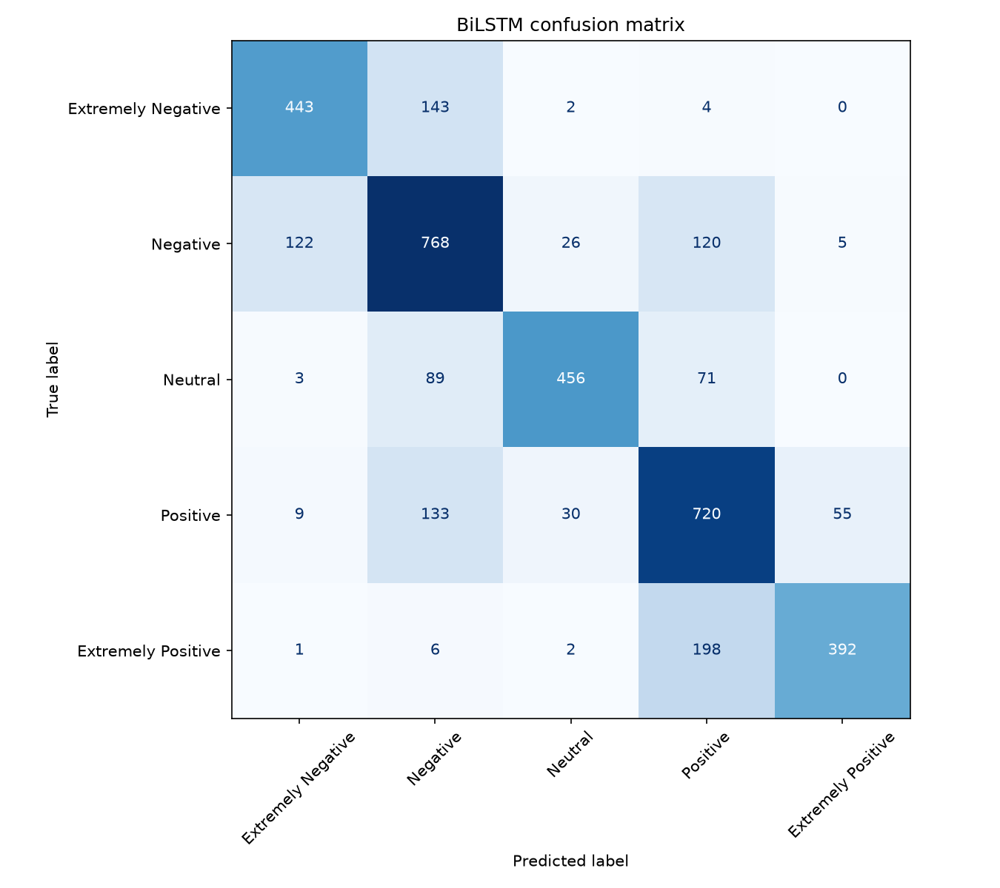
_confusion_matrix.png)
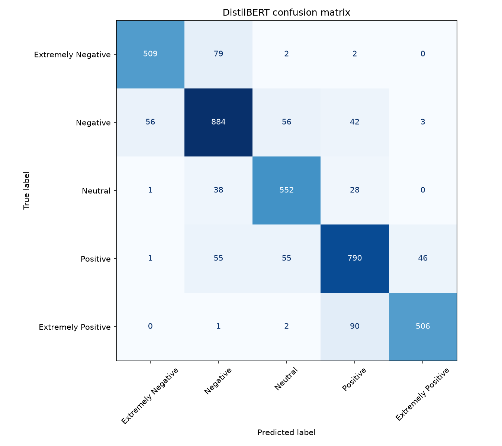
Learned Representations
PCA, t-SNE, and UMAP projections and class-prototype cosine similarity of the representation that feeds each model’s final linear layer, computed on test tweets.
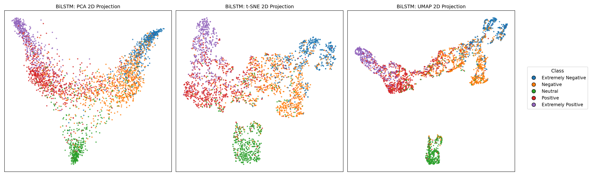
_dimensionality_reduction.png)
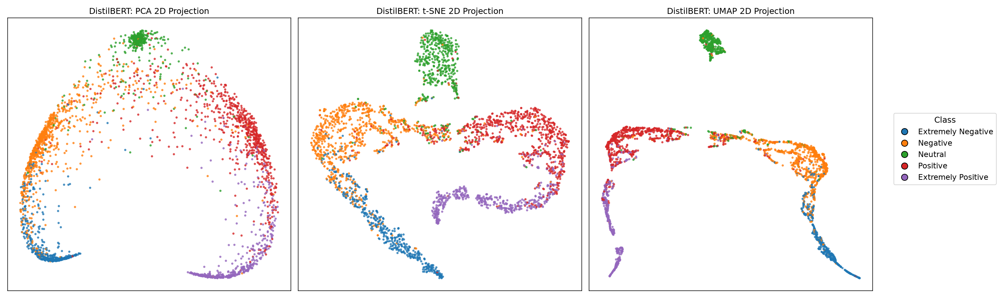
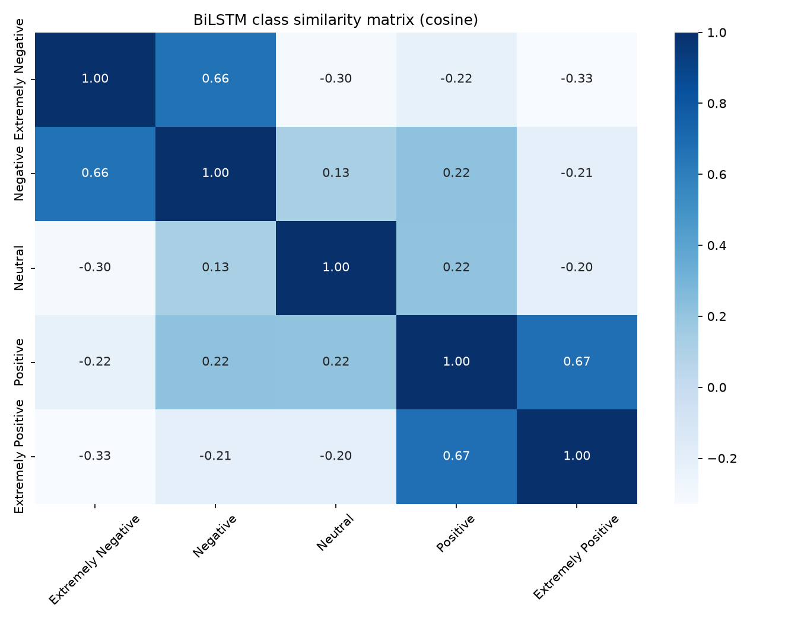
_class_similarity_matrix.png)
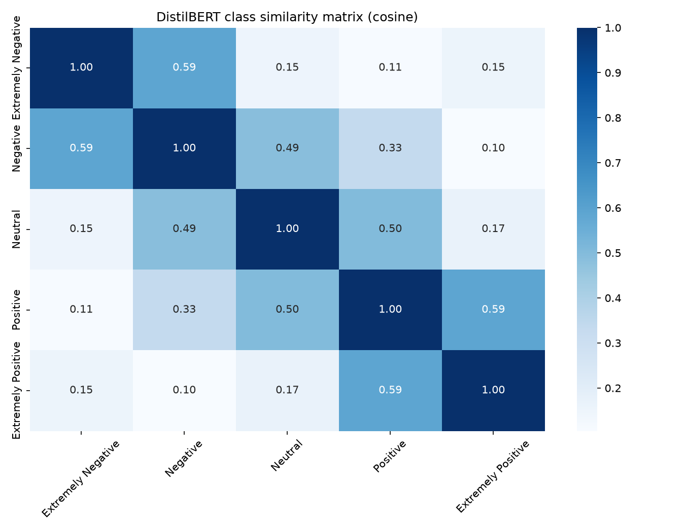
Qualitative Predictions
Test tweets grouped by whether all models, only some models, or no model classify them correctly (generated with python main.py --infer).
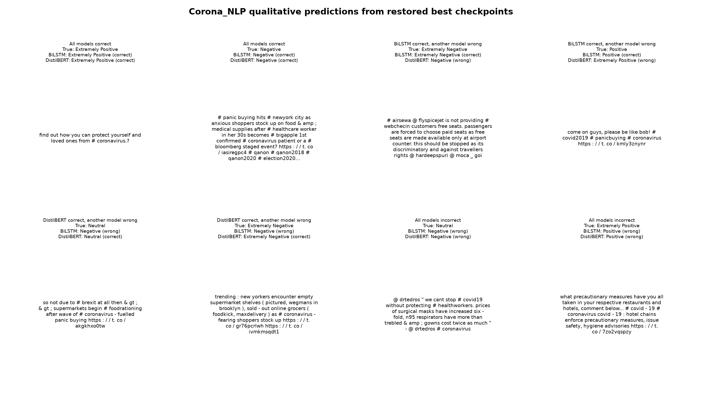
- Configuration:
main.py; checkpoints:checkpoints/bilstm_best.pt,checkpoints/distilbert_freezebb_best/, andcheckpoints/distilbert_best/. - Commands to regenerate every number and plot are listed in the Methodology tab;
--evalre-evaluates a saved checkpoint without retraining. - Per-epoch training history is stored next to each checkpoint as a
_history.jsonfile.
Limitations & Conclusion
- Limited repeatability: each experiment is a single run with seed 42 and no confidence intervals, and runtime figures depend on the hardware listed in the Methodology tab, so absolute times are indicative.
- Untuned frozen run: EXP-2 reuses the full fine-tuning learning rate and epoch budget so that trainable scope is the only changed factor. Its best epoch is the last one, so it is probably under-trained and does not show the best achievable frozen-backbone result.
- Not a single-factor comparison for EXP-1: the BiLSTM differs from the DistilBERT runs in architecture, pretraining, learning rate, batch size, and epochs, so the gap reflects their combined effect.
- Evaluation caveats: the test split predates the training split and shares one normalized text with it, and some labels are ambiguous between adjacent sentiment classes (see the EDA tab), so part of the remaining error may not be model failure.
- Approximate FLOPs:
thopcounts layer operations only, so the DistilBERT FLOPs figure is a lower bound. - Best measured performance: EXP-3 (full fine-tuning) achieves 85.33% test accuracy and 0.8577 macro-F1.
- Different practical trade-offs: the BiLSTM is the smallest and fastest model (4.57 M parameters, 0.0585 ms/sample) at 73.17% accuracy; freezing the backbone cuts training time by 67% but not inference cost, and it was the weakest model here.
- Conclusion for this setup: under a shared 2e-5 learning rate and five-epoch budget, updating the whole DistilBERT backbone was necessary to benefit from pretraining, and it beat the from-scratch BiLSTM by a clear margin.
Error Taxonomy & Compute-Cost Breakdown
This tab breaks the test-set errors of the three experiments into failure categories using their confusion matrices (3,798 test tweets), illustrates why some tweets are hard with concrete examples, and analyzes compute cost from the measured run logs.
Failure Category Breakdown
Every misclassification falls into exactly one of three categories, defined from the ordered sentiment scale.
| Category | Definition | Example |
|---|---|---|
| Intensity error | Correct polarity but wrong strength: Negative ↔ Extremely Negative, or Positive ↔ Extremely Positive. | A Positive tweet predicted as Extremely Positive |
| Neutral-boundary error | A Neutral tweet predicted as a polar class, or a polar tweet predicted as Neutral. | A Neutral tweet predicted as Negative |
| Polarity flip | A negative-side class predicted as a positive-side class, or the reverse. Mild flips are Negative ↔ Positive; severe flips involve at least one extreme class. | A Negative tweet predicted as Positive (mild), or as Extremely Positive (severe) |
Errors by Category
Counts are test tweets; percentages in the first column are of all 3,798 tweets, and in the other columns they are shares of that model’s errors.
| Experiment | Total errors (error rate) | Intensity errors | Neutral-boundary errors | Polarity flips |
|---|---|---|---|---|
| EXP-1 BiLSTM | 1,019 (26.8%) | 518 (50.8%) | 223 (21.9%) | 278 (27.3%): 253 mild, 25 severe |
| EXP-2 DistilBERT (frozen backbone) | 2,319 (61.1%) | 773 (33.3%) | 666 (28.7%) | 880 (37.9%): 582 mild, 298 severe |
| EXP-3 DistilBERT (full fine-tuning) | 557 (14.7%) | 271 (48.7%) | 182 (32.7%) | 104 (18.7%): 97 mild, 7 severe |
Direction of Errors
“Under-called” means an extreme tweet predicted as the milder neighboring class (Extremely Negative → Negative, Extremely Positive → Positive); “over-called” is the reverse.
| Experiment | Intensity under-called | Intensity over-called | Polar tweet → Neutral | Neutral tweet → polar |
|---|---|---|---|---|
| EXP-1 BiLSTM | 341 (65.8%) | 177 (34.2%) | 60 | 163 |
| EXP-2 DistilBERT (frozen backbone) | 641 (82.9%) | 132 (17.1%) | 328 | 338 |
| EXP-3 DistilBERT (full fine-tuning) | 169 (62.4%) | 102 (37.6%) | 115 | 67 |
Most Common Mistake per Class
The most frequent wrong prediction for each true class, with its count and its share of that class’s tweets.
| True class | Support | EXP-1 BiLSTM | EXP-2 DistilBERT (frozen) | EXP-3 DistilBERT (full) |
|---|---|---|---|---|
| Extremely Negative | 592 | Negative · 143 (24.2%) | Negative · 310 (52.4%) | Negative · 79 (13.3%) |
| Negative | 1,041 | Extremely Negative · 122 (11.7%) | Positive · 371 (35.6%) | Extremely Negative · 56 (5.4%) |
| Neutral | 619 | Negative · 89 (14.4%) | Positive · 196 (31.7%) | Negative · 38 (6.1%) |
| Positive | 947 | Negative · 133 (14.0%) | Negative · 211 (22.3%) | Negative · 55 (5.8%) |
| Extremely Positive | 599 | Positive · 198 (33.1%) | Positive · 331 (55.3%) | Positive · 90 (15.0%) |
- Mostly graded mistakes, not reversals. For the BiLSTM and full fine-tuning, intensity errors are the largest category (50.8% and 48.7% of errors), while polarity flips account for 27.3% and 18.7%. Almost all of those flips are mild: 253 of 278 for the BiLSTM and 97 of 104 for full fine-tuning.
- Extreme classes are under-called. 65.8% of the BiLSTM’s intensity errors, 62.4% of full fine-tuning’s, and 82.9% of the frozen run’s predict the milder neighbor. For example, the BiLSTM labels 198 of 599 Extremely Positive tweets (33.1%) as Positive, against 90 (15.0%) for full fine-tuning.
- Pretraining does not help every category equally. Compared with the BiLSTM, full fine-tuning removes 62.6% of polarity flips and 47.7% of intensity errors, but only 18.4% of neutral-boundary errors, so the Neutral boundary improves least.
- The frozen run fails differently. Polarity flips are its largest category (880 errors, 37.9%), including 298 severe flips and 22 direct Extremely Negative ↔ Extremely Positive swaps. It predicts Positive for 371 of 1,041 Negative tweets (35.6%), which suggests the frozen features carry sentiment polarity only weakly.
- Neutral is handled differently by each model. The BiLSTM pushes Neutral tweets into polar classes far more often than it pulls polar tweets into Neutral (163 vs 60), while full fine-tuning does the opposite (115 polar tweets predicted as Neutral vs 67 the other way).
Qualitative Failure Cases
Failures taken from the qualitative figure in the Results tab, which compares the BiLSTM with DistilBERT on eight test tweets.
The eight tweets were selected deterministically (the first matches in each agreement category, varying the true class where possible), so they illustrate failure types rather than estimate how often each occurs. Six contain at least one wrong prediction and are listed below; the text is shown as decoded from the tokenizer, so it is lowercased, and links are omitted.
| Tweet | True label | BiLSTM | DistilBERT | Failure category | Observation |
|---|---|---|---|---|---|
| “# airsewa @ flyspicejet is not providing # webchecin customers free seats. passengers are forced to choose paid seats … this should be stopped as its discriminatory and against travellers rights” | Extremely Negative | Extremely Negative (correct) | Negative (wrong) | Intensity (under-called) | A formally worded complaint with evaluative terms but no overtly emotional language; DistilBERT stops one step short of the strong label, while the BiLSTM matches it. |
| “come on guys, please be like bob! # covid2019 # panicbuying # coronavirus” | Positive | Positive (correct) | Extremely Positive (wrong) | Intensity (over-called) | A short, upbeat appeal with hashtags and a meme-like reference; DistilBERT predicts the stronger class. |
| “so not due to # brexit at all then & gt ; & gt ; supermarkets begin # foodrationing after wave of # coronavirus - fuelled panic buying” | Neutral | Negative (wrong) | Neutral (correct) | Neutral boundary | A wry, news-like remark whose topic words (food rationing, panic buying) are negative; the BiLSTM appears to follow those words, while DistilBERT keeps Neutral. |
| “trending : new yorkers encounter empty supermarket shelves ( pictured, wegmans in brooklyn ), sold - out online grocers ( foodkick, maxdelivery ) as # coronavirus - fearing shoppers stock up” | Extremely Negative | Negative (wrong) | Extremely Negative (correct) | Intensity (under-called) | A descriptive news-style post about empty shelves; only DistilBERT reaches the strong label, and the BiLSTM stops at Negative. |
| “@ drtedros " we cant stop # covid19 without protecting # healthworkers. prices of surgical masks have increased six - fold, n95 respirators have more than trebled & amp ; gowns cost twice as much "” | Neutral | Negative (wrong) | Negative (wrong) | Neutral boundary | A quoted statement reporting price increases; both models read the unfavorable facts as Negative, although the post only reports them. |
| “what precautionary measures have you all taken in your respective restaurants and hotels, comment below... # covid - 19 # coronavirus covid - 19 : hotel chains enforce precautionary measures, issue safety, hygiene advisories” | Extremely Positive | Positive (wrong) | Positive (wrong) | Intensity (under-called) | A question plus an informational note on safety measures; the Extremely Positive label is hard to infer from the text, so both predict the milder Positive. |
The other two tweets are handled correctly by both models: a short supportive message (“find out how you can protect yourself and loved ones from # coronavirus.?”, Extremely Positive) and a long panic-buying post packed with hashtags (Negative).
- Graded errors, no reversals. Four of the six failures are intensity errors and two are neutral-boundary errors; none is a polarity flip. This is in line with the breakdown above, where polarity flips are only 27.3% (BiLSTM) and 18.7% (full fine-tuning) of errors.
- Disagreements go both ways. DistilBERT under-calls the intensity in the first case and over-calls it in the second, while the BiLSTM errs in the third and fourth. The even split is by construction (two cases per category), not evidence of equal accuracy: DistilBERT is 12.16 accuracy points better overall.
- Hardest when there is no overt emotion. Both models fail on the tweets that report facts or ask a question (the fifth and sixth cases), where the assigned label (Neutral, Extremely Positive) depends on annotator judgment. This matches the labeling consideration in the EDA tab.
- Noisy surface text. All eight tweets contain hashtags, and several carry HTML-entity residue such as
& amp ;and& gt ;, because the pipeline applies no text cleaning.
Label-Ambiguity Examples from the Dataset
Other labeled tweets, from the EDA samples and the duplicated training texts, whose label is arguable. They are not confirmed errors of a model.
| Tweet | Given label | Why it is hard | Related failure category |
|---|---|---|---|
| “ive never seen my pharmacy and grocery store so crowded in my life. like yall what happened to social distancing?” | Positive | Reads as concern about crowding, so the surface tone and the label disagree. | Polarity flip |
| “# coronavirus is further pushing people to move to online shopping. who will benefit from this wave?” | Positive | A neutral observation and question with no clear emotional tone. | Neutral boundary |
| “find out how you can optimise talent generated content and understand the isolated consumer by downloading our latest report.” (links omitted) | Positive | Promotional text with marketing language but no expressed emotion. | Neutral boundary |
| “catch up cash use has halved in the past few days as people switch to cards to avoid spreading the atm scheme said usage is likely to fall even further given the” | Negative | News-style report where the sentiment depends on reading the economic news as bad; the text also ends mid-sentence. | Neutral boundary |
| “With oil prices falling amid the COVID 19 recession it s the beginning of the end for fracking” | Negative | Viewpoint-dependent: bad news for the industry, but not necessarily negative in tone for every reader. | Polarity flip |
| “Food supply chains are strong in the COVID 19 pandemic To keep them that way strong public private cooperation smart policy responses and prudent consumer behavior are essential” | Extremely Positive | Reassuring, informational text; whether it is Positive or Extremely Positive is a judgment call. | Intensity |
Hardware Compute Utilization
Training figures come from the logged training loop (validation passes, checkpoint saving, and test evaluation excluded) and were measured on a single NVIDIA GeForce RTX 4060 Laptop GPU (8 GB GDDR6).
GPU Time
| Experiment | Epochs run | Training time | GPU-hours | Time per epoch | Time to best checkpoint | Time after best checkpoint |
|---|---|---|---|---|---|---|
| EXP-1 BiLSTM | 10 of 15 | 247.36 s | 0.0687 | 24.7 s | ≈174.4 s (7 epochs) | ≈73.0 s (3 epochs, 29.5%) |
| EXP-2 DistilBERT (frozen backbone) | 5 of 5 | 331.45 s | 0.0921 | 66.3 s | 331.45 s (5 epochs) | 0 s |
| EXP-3 DistilBERT (full fine-tuning) | 5 of 5 | 1,019.09 s | 0.2831 | 203.8 s | ≈815.6 s (4 epochs) | ≈203.5 s (1 epoch, 20.0%) |
The three reported runs used 1,597.90 s in total (0.4439 GPU-hours, about 26.6 minutes). Time-to-best figures sum the logged per-epoch times, which are rounded to 0.1 s; EXP-2’s per-epoch times were not logged, so only its total is shown.
Throughput and Compute Efficiency
| Experiment | Training throughput (samples/s) | Inference latency (ms/sample) | Inference throughput (samples/s) | FLOPs (B/sample) | Effective rate (TFLOP/s) |
|---|---|---|---|---|---|
| EXP-1 BiLSTM | 1,497.5 | 0.058519 | 17,088 | 0.085681 | 1.46 |
| EXP-2 DistilBERT (frozen backbone) | 558.8 | 1.183257 | 845 | 8.332611 | 7.04 |
| EXP-3 DistilBERT (full fine-tuning) | 181.7 | 1.186319 | 843 | 8.332611 | 7.02 |
Training throughput is the 37,041 training tweets times the epochs run, divided by training time. Inference was timed at the evaluation batch sizes (128 for the BiLSTM, 32 for DistilBERT). The effective rate is counted FLOPs per sample divided by measured time per sample. The RTX 4060 Laptop GPU has 3,072 CUDA cores and an FP32 peak of roughly 10–14.6 TFLOP/s depending on the laptop’s power limit, so DistilBERT’s effective rate is roughly 48–71% of peak and the BiLSTM’s roughly 10–15%.
Memory Footprint
| Experiment | Parameters | Weights (measured) | Gradients (estimated) | AdamW states (estimated) | Training state total (estimated) |
|---|---|---|---|---|---|
| EXP-1 BiLSTM | 4.57 M | 17.42 MB | 17.42 MB | 34.85 MB | 69.70 MB |
| EXP-2 DistilBERT (frozen backbone) | 66.96 M (0.59 M trainable) | 255.42 MB | 2.27 MB | 4.54 MB | 262.22 MB |
| EXP-3 DistilBERT (full fine-tuning) | 66.96 M (all trainable) | 255.42 MB | 255.42 MB | 510.84 MB | 1,021.69 MB (≈1.0 GB) |
Estimates assume 32-bit weights, one gradient per trainable parameter, and two AdamW moment buffers per trainable parameter. They exclude activations, the CUDA context, and allocator overhead, so real peak memory is higher. At inference time only the weights are needed. All three runs fit within the GPU’s 8 GB of memory.
- Full fine-tuning buys accuracy at a moderate training cost. Compared with the BiLSTM it adds 12.16 accuracy points for 771.7 s (12.9 minutes) more training, about 0.95 points per extra GPU-minute, but needs 14.7× the weight memory (255.42 vs 17.42 MB) and 20.3× the inference time per sample.
- Freezing saves time and memory but not enough to matter here. The frozen run trains 3.07× faster than full fine-tuning (558.8 vs 181.7 samples/s) and its estimated training state is 3.9× smaller (262 MB vs 1.0 GB). Those savings of 687.6 s (11.5 minutes) and about 760 MB cost 46.39 accuracy points, and inference is no cheaper.
- Early stopping cost is visible. The three patience epochs spent after the BiLSTM’s best checkpoint took 29.5% of its training time, and the one epoch after full fine-tuning’s best checkpoint took 20.0% of its time.
- The BiLSTM uses hardware less efficiently per FLOP. It reaches about 1.46 counted TFLOP/s, 4.8× lower than DistilBERT’s 7.0 (roughly 10–15% of the GPU’s FP32 peak, against 48–71% for DistilBERT), which is consistent with the recurrence being less parallel than Transformer matrix multiplications. It is still far cheaper in absolute terms: 17,088 samples/s at inference against about 845.
- Peak GPU memory, GPU utilization percentage, and power draw were not measured, so memory figures are analytic estimates, and utilization is only approximated from effective FLOP rates against a peak that depends on the laptop’s power limit.
- Each experiment was timed once, and inference was timed at the evaluation batch sizes, not at batch size 1.
- FLOPs come from the
thoplibrary, which counts layer operations only, so the DistilBERT FLOPs and its effective rate are lower bounds.
Presentation Video & Deliverables
CO3133-Semester-261 - Group [ID] - Assignment 2
YouTube Video Embed Placeholder (Assignment 2)
Assignment 2 AI Disclosure
AI usage records for Assignment 2 per Section 5 of the handbook.